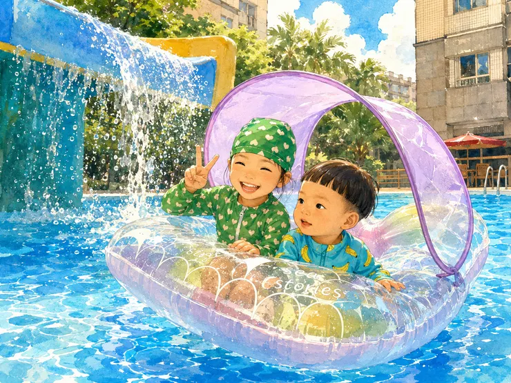

星期天陽光晴朗，雞爸爸和鼠姊姊臨時決定下樓戲水。鼠姊姊拿出水槍小船和巨大遮陽船，讓雞爸爸瞬間變成人力打氣筒。兔阿嬤建議鼠媽媽帶著怕水的龍弟弟一起加入。從龍弟弟緊抱媽媽，到終於願意和姊姊一起坐上大船，一場沒有遠行的社區泳池小冒險，就這樣成為一家人的夏日記憶。沒有豪華遊艇，而是爸爸用肺活量、媽媽用廚藝、阿嬤用一句建議，一起把星期天譜成一家人的幸福記憶。

星期天，是一個陽光很誠實的日子。
不是那種「看起來很熱，其實水很冷」的假夏天，而是那種一開窗戶，就讓人覺得：「今天不玩水，好像對不起這個太陽」真正的夏天，因為上次雞爸爸只有半小時的夏日時光...
雞爸爸小瞧了這艘黃金梅利號的威力
一早，鼠媽媽便出門買菜，眼看快到中午，正準備回家大展身手，雞爸爸和鼠姊姊卻在樓上看到社區泳池裡已經有小朋友在玩水。 父女兩個人對看了一眼。 不用講太多。 那個眼神大概就是： 今天的水，應該很好玩。 鼠姊姊很快進入作戰模式。她先拿出鼠媽媽上次買的水槍小船，很自然地說：「這個可以給弟弟。」 雞爸爸心想，不錯，這是一個合理安排。龍弟弟小小一隻，坐小船剛剛好。 結果下一秒，鼠姊姊又拿出另一艘船。 不是小船。 是船。 是一艘可以躺上去，還有遮陽棚的大船。 雞爸爸看到那艘船，臉色瞬間有點變綠。鼠姊姊還很認真地補上一句： 「它還可以遮陽耶。」突然聞到些不尋常的味道...
兔阿嬤的一句話，讓鼠媽媽也下水了
原本這場泳池冒險，可能只是雞爸爸帶鼠姊姊下樓玩水。兔阿嬤看到有船可以坐，突然給了個務實又溫暖的建議： 「既然有船，鼠媽媽也可以帶龍弟弟一起下去啊。」 於是，原本準備在廚房大展身手的鼠媽媽，也久違地換上泳衣，帶著龍弟弟一起加入這場社區泳池小冒險。 雞爸爸後來想想，家庭生活最神奇的地方，大概就是這樣。很多回憶，一開始都不是計畫好的。只是從一句「天氣很好」、一個孩子的期待、一艘莫名其妙很大的船，慢慢滾成一家人共同參與的夏日記憶。
雞爸爸的人力打氣筒模式
因為怕太晚吃午餐，雞爸爸決定直接把船拿到樓下吹。這個決定，現在回想起來，有一點太天真。雞爸爸以為自己只是要吹一艘充氣船，實際上比較像是一場中年爸爸的肺功能耐力測驗。 吹一下、再吹一下、再吹很多下。吹到太陽很熱、泳池很藍、孩子很開心，而雞爸爸開始懷疑自己是不是正在進行一場沒有觀眾的有氧訓練。原本以為是下去游泳練心肺，結果真正畫面是在社區游泳池旁邊，對著一艘紫色遮陽大船拼命輸出生命能量。
龍弟弟的怕水與鼠媽媽的抱抱模式
另一方面，龍弟弟一開始其實沒有那麼享受。 對一歲多的孩子來說，泳池不是「清涼好玩」這麼簡單。水很大，聲音很多，身體會浮起來，腳也踩不到地。所以不管是浮板、泳圈，還是任何看起來很可愛的玩水裝備，都沒有辦法立刻讓他放心。
龍弟弟唯一信任的游泳配備，只有鼠媽媽。也許小時候保母洗澡時可能吃到水，但只要是鼠媽媽抱著，世界就是安全的。雞爸爸看著龍弟弟一邊緊緊靠著媽媽，一邊慢慢適應泳池的水，覺得孩子的勇敢不是一開始就衝出去。 有時候，勇敢是從「我先抱著你」開始的。 先有安全感，才會有探索。 先有人接住，孩子才願意慢慢把手伸向世界。
交朋友技能已經點滿的鼠姊姊
相較之下，鼠姊姊已經完全進入狀態。 在雞爸爸還在跟那艘大船搏鬥的時候，她已經開始和旁邊的哥哥弟弟噴水、打水仗、玩球。那個以前需要爸爸媽媽陪著、需要一點時間觀察環境的小女孩，現在已經可以在水池裡笑得很開心，自己找到玩伴，也自己創造快樂。 成長從來不是什麼隆重的儀式，可能就是某個夏天，突然發現孩子不再只是拉著你的手，而是會回頭對你笑一下，然後自己游向朋友。
終於，船好了
直到不知道過了多久，雞爸爸終於把那艘大船吹好了。那一刻，應該要有掌聲。至少雞爸爸自己心裡真的有掌聲響起來。鼠姊姊開心地坐上去，看著姊姊玩得開心，鼠媽媽問龍弟弟要不要一起上船，龍弟弟的台詞也終於從「不要、不要」換成「好」。
原本一直怕水的龍弟弟，坐在大船裡之後，表情慢慢放鬆下來。 雞爸爸推著船，在泳池裡慢慢前進。 那一刻，社區泳池突然不只是社區泳池，它變成了一座小湖。
雞爸爸化身威尼斯Gondola船夫。 鼠姊姊和龍弟弟，成了乘風破浪的小小探險家。 後來，我們還一起體驗了滑水道旁邊的瀑布。水嘩啦啦落下來，對大人來說只是消暑，對孩子來說卻像是一場真正的冒險。

鼠姊姊笑得很開心，龍弟弟也在那艘用雞爸爸肺活量換來的大船裡，慢慢完成了自己第一次到游泳池玩水的初體驗。玩水玩到差不多，一家人終於收拾裝備上樓。一旁的哥哥弟弟們還很捨不得，可能是捨不得我們的船...？但雞爸爸此時已經經歷了吹船、推船、陪玩、收船等一連串夏日雞爸體能訓練，身體差不多進入「電量低於 20%」的狀態．．．
真正暖心的 是鼠媽媽的愛心午餐
鼠媽媽一回到家，立刻從泳池模式切換成廚房模式。剛剛還在水裡抱著龍弟弟、陪他慢慢適應泳池的鼠媽媽，回到廚房後又展現穩定輸出的廚藝。熱熱的飯菜一上桌，鼠姊姊和龍弟弟像是把整個上午的玩水能量，都轉換成食慾。鼠姊姊吃得更香。 龍弟弟也吃得更多。 那一刻雞爸爸突然覺得，今天最厲害的可能不是那艘紫色遮陽大船，也不是雞爸爸終於把船吹起來，而是鼠媽媽可以從泳池陪玩，無縫接軌到廚房主場。 孩子玩得開心，吃得更多，睡得更穩。 這大概就是家庭生活裡最實際的幸福循環。
夏日幸福號靠岸 我們家也有香吉士料理招待
那天，我們沒有去海邊。也沒有真正出遠門。但鼠姊姊和龍弟弟，還是乘風破浪~~雞爸爸用肺活量吹起一艘船，鼠媽媽用廚藝接住一家人的胃口，兔阿嬤用一句建議讓全家一起下水，而孩子們用笑聲和食慾證明：有時候，一個幸福回憶，不是行程安排得多完美， 而是大家願意一起下水、一起上岸，最後一起好好吃一頓飯。
家庭生活裡最珍貴的回憶，本來就計畫不出來。它是大家剛好都願意停下來，陪孩子一起玩出來的。也是玩累之後，坐在餐桌前，被一頓熱飯菜慢慢放進家人腦海裡的回憶。